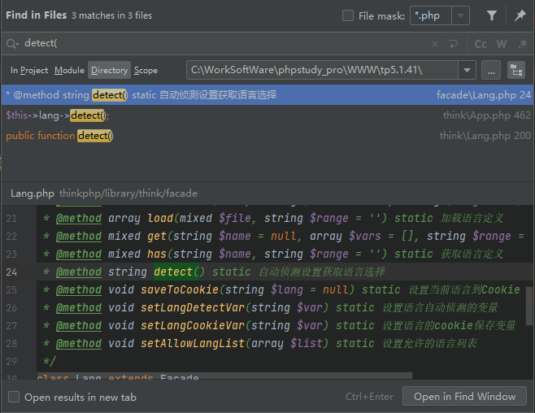
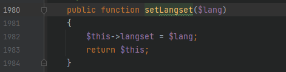
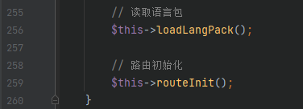
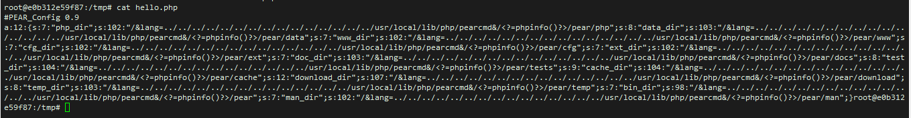
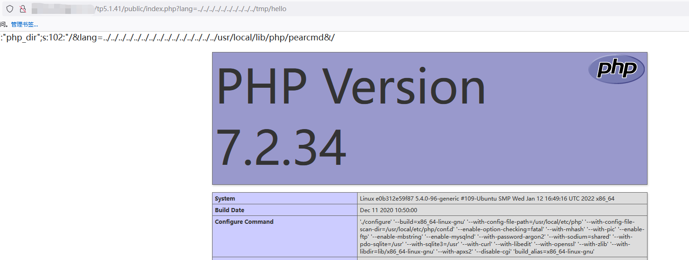

漏洞分析: ThinkPHP_6.0.13_文件包含漏洞
本文首发于奇安信攻防社区：https://forum.butian.net/share/2059
本文仅用于技术讨论与研究，文中的实现方法切勿应用在任何违法场景。如因涉嫌违法造成的一切不良影响，本文作者概不负责。
0x00 漏洞简介
2022年12月出的漏洞，影响很大但目前没有 CVE 编号，起源是某大佬在跳跳糖发的一篇文章，ThinkPHP 在开启多语言的情况下，存在文件包含漏洞，配合 pearcmd 可以 getshell，大佬牛*。
0x01 漏洞影响
ThinkPHP5.x 全版本，现已修复，修复链接： https://github.com/top-think/framework/commit/450450a1e38c5897c8d1cbd167068660632fdb27
ThinkPHP6.0.13 及之前，6.0.14 版本已修复
0x02 环境搭建
本文以 ThinkPHP5.1.41 为例。
使用 composer 快速搭建 thinkphp5.1.41 系列最新版环境
1 | |
这样安装的 topthink/framework 使用的是最新版已经修补了的，因此我们需要进入 tp5.1.41 文件夹，将 composer.json 中的 "topthink/framework": "5.1.*" 修改为 "topthink/framework": "5.1.41" ，然后执行 composer update
此漏洞需要开启多语言功能才可以使用，在 5.x 系列开启的方式如下
文件 config/app.php 中可以设置
1 | |
0x03 漏洞分析
分析部分将根据官方的修复来寻找漏洞点位，这也是常用的寻找 1day 的方式。
我们可以先看看官方的修复：https://github.com/top-think/framework/commit/450450a1e38c5897c8d1cbd167068660632fdb27

这里 commit 的时候就很明显地说了是改进多语言判断机制，修复的代码实际上就是在做一件事，对 $langSet 进行过滤。
接下来我们跟进代码进行分析，上面的代码位于 thinkphp/library/think/Lang.php 文件中的 detect 方法

我们此处是存在漏洞的代码，也就是没有进行过滤的，修复代码是在 219 行对 $langSet 增加过滤
先看 $langSet 是如何得到的，有三种方式：
第一种方式，直接 GET 方式获取，参数名为 $this->langDetectVar 的值，这个值的默认定位如下
1 | |
也就是 GET 一个 lang 即可获取 langSet
第二种方式，通过 COOKIE 获取，参数如上也是 lang
第三种方式，通过 $_SERVER['HTTP_ACCEPT_LANGUAGE'] ，这也是我们可以控制的，但是他存在过滤代码，因此这里我们不好利用
根据如上三种方式，那么这个 $langSet 是轻易可控的
看到下面的代码，判断如果 $this->allowLangList 是否为空，或者 $langSet 是否在该数组中，这里的 $this->allowLangList 默认是为空的，因此会进入 if 语句内部，这时就会将我们可控的 $langSet 直接赋值给 $this->range ，然后将其返回
通过上述代码，可知存在漏洞的版本中，这个 detect 方法的返回值是完全可控的，接下来我们就是去找此方法的调用位置，直接搜索即可

第二条就是调用 detect 方法，跟进代码

代码中加载了当前的配置，然后查询 app.lang_switch_on ，这是开启多语言机制的标志，当返回为 true 时即可调用到我们可控的 detect 方法，这时就会使得 $this->lang 中的 range 变量是可控的，跟进 465 行
$this->lang->range() 方法

返回 $this->range ，这个值前面说过了，完全可控，继续跟进
$this->request->setLangset() 方法，参数是上面的可控值

直接将参数 $lang 赋值给了 $this->langset，因此现在 $this->langset 可控
接下来回到上面的加载系统语言包

看到 $this->request->langset()

直接返回 $this->langset ，而这个值可控，我们可以通过设置成 ../../xxx 的形式获取到任意位置的 php 文件，限制了后缀，因此只能是 php 文件
因此 $this->lang->load() 方法的参数可以是任意位置的 php 文件组成的数组，跟进该方法看看

代码很容易看懂，遍历传进来的数组，最后 include 该文件，因此这里我们可以实现包含任意位置的 php 文件
最后就是寻找 loadLangPack 方法调用的位置，发现在 thinkphp/library/think/App.php 的 initialize 方法中，直接被调用

这个 initialize 方法是初始化 thinkphp 的应用，运行时一定会调用。
由上面的就能知道该漏洞只要在开启了多语言机制，访问任何页面都会触发。调用链如下
1 | |
0x04 漏洞复现
该漏洞有个最大的限制点就是被包含的文件后缀一定是 php ，要包含一个 php 文件，利用的方式就少了，但我们可以利用 pearcmd ，参考链接：https://www.leavesongs.com/PENETRATION/docker-php-include-getshell.html#0x06-pearcmdphp
利用 pearcmd 需要满足条件：
- 安装了该
pear库 - 开启
register_argc_argv配置
常规的环境一般很少会安装 pear 库，也不会开启 register_argc_argv 配置，但是 php 的官方 docker 环境默认会有该库，并且 register_argc_argv 也会被打开，这里我开了一个使用 php 官方 docker 环境的 docker ，可以看到默认有 pear

此处就借助该 docker 进行漏洞复现，使用了官方的 docker ，就只需要打开多语言即可，然后就可以进行利用，pearcmd 的利用方法就不多讲了，可以看上面提供的链接

这时候就可以看到 /tmp 目录下写入了一个 hello.php 文件

其实这里也不是单纯地将 <?=phpinfo()?> 写入了，而是一个序列化后的数据，但对 php 执行不影响，我们再利用本文的漏洞对该 /tmp/hello.php 文件进行包含

0x05 总结
总体来说，感觉这个洞的限制还是比较多的，多语言机制可能还好，开这个的估计也不在少数，但是文件包含的限制比较不好弄，因为限制了 php 的后缀，虽然可以通过 pear 来 getshell ，但是一般环境默认不存在，让这个洞 getshell 的几率大大降低了。